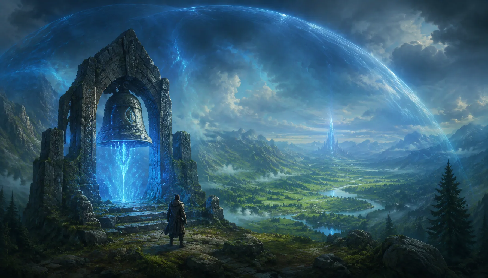

Jogar
Entre em Ermândia
O Ragna Tale está em pré-alfa fechado. O launcher já instala e atualiza o jogo sozinho; o download público abre quando o primeiro mapa estiver pronto para receber gente.
Download em breveAcompanhar a produção
Pré-alfa fechado · Windows
Como vai ser
Três passos
- Instale o launcherUm instalador pequeno, sem precisar de administrador.
- Ele baixa o jogoE depois só o que mudou a cada atualização.
- Escolha a tribo e jogueUm clique em JOGAR e você está no Pouso do Sino.
Requisitos
O que já testamos
- SistemaWindows 10 ou 11, 64 bits
- Placa de vídeoPlaca dedicada. Os requisitos finais saem com o download público
- ConexãoO jogo é 100% online
- PreçoNada pago dá poder, drop ou XP